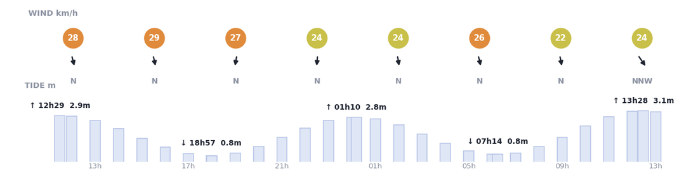
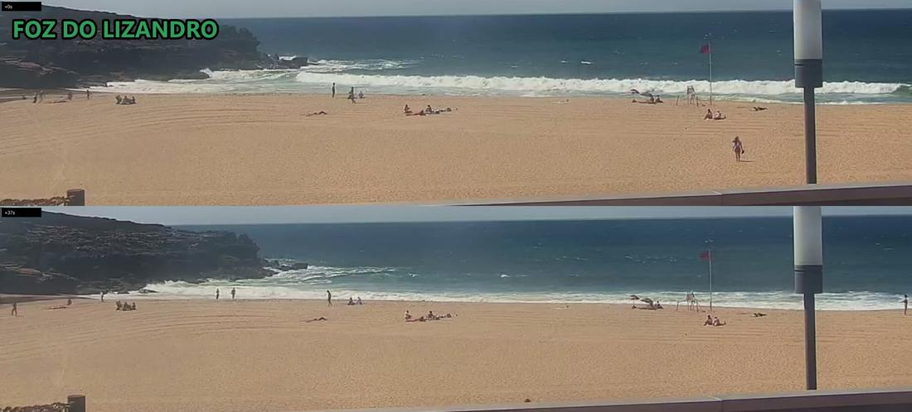
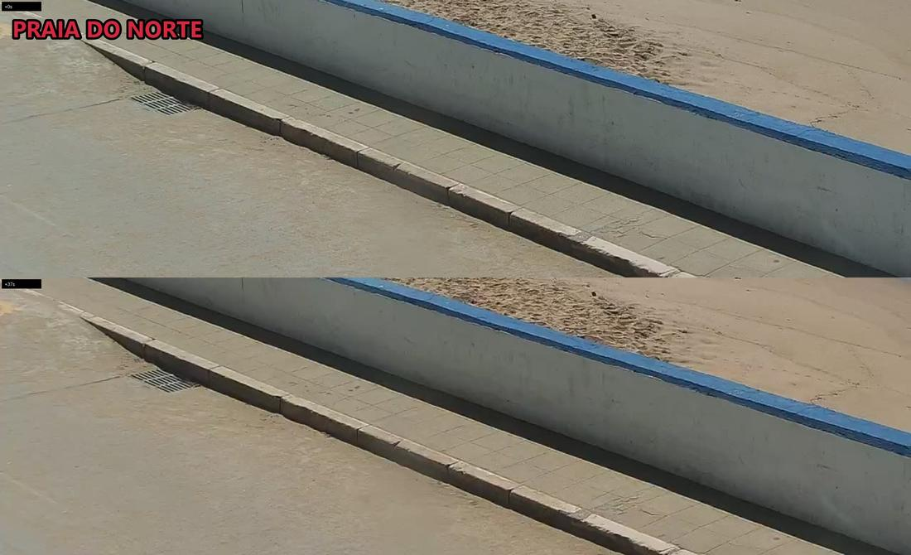
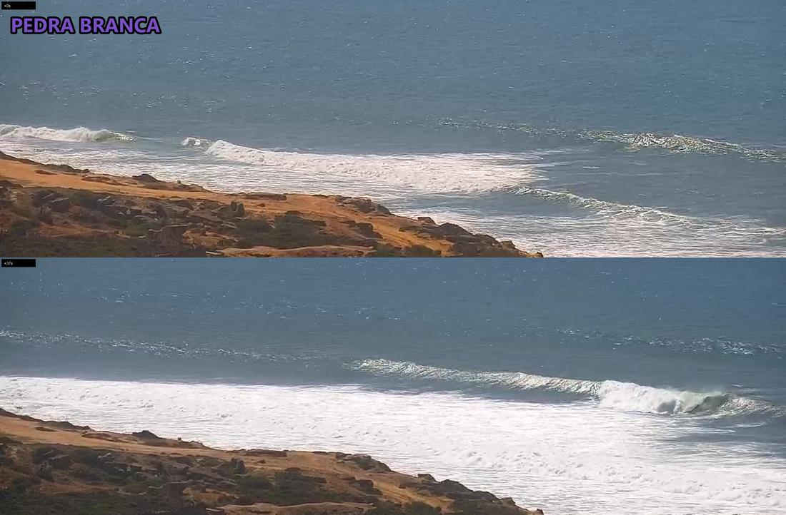
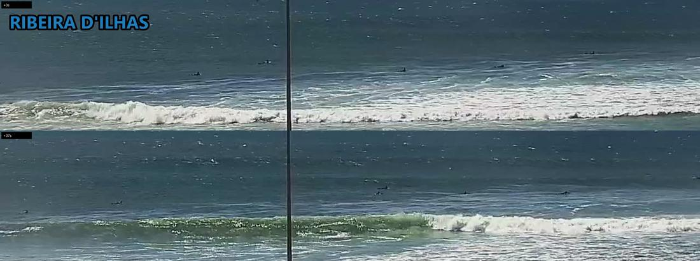
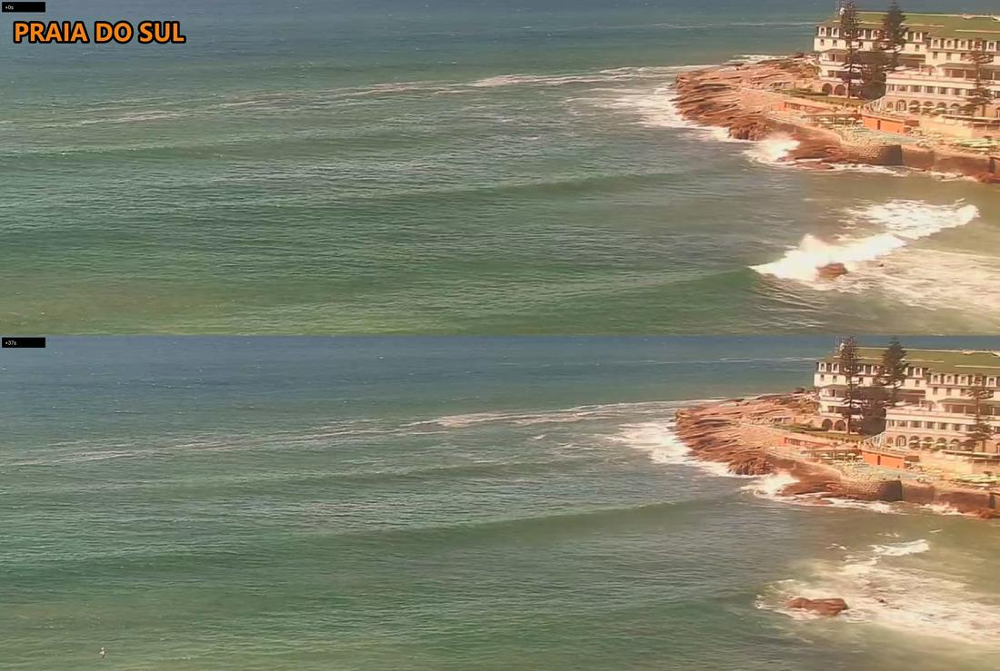

Norte
POOR-TO-FAIR1.2–1.8 m
cam unreadable
cam still framed on the promenade and sea wall, lineup entirely out of shot; nothing countable, not an empty lineup
Last picts >>
Latest: 2026-09-07 14:13 (afternoon) · last 20 runs of 59 recorded · cams read for wave shape and head count
Ribeira FAIR 1.2-1.8m >>
Norte P-FAIR 1.2-1.8m >>
Sul P-FAIR 1.2-1.8m >>
Lizandro P-FAIR 1.2-1.5m >>
Pedra P-FAIR 1.2-1.5m >>
2. CAM
Ribeira clean lines still peeling down the reef · 7 surfers
Norte 🚫 cam down (pointed at the sea wall)
Sul barely breaking, wrapping into the rocks · 0 surfers
Lizandro closeouts dumping, red flag up · 0 surfers
Pedra washed out, whitewater across the bank · 0 surfers
3. VERDICT
Ribeira only, and go now: the pack thinned from 18 to 7 but it is still clean.
NEXT 24H Mon: 15:00 FAIR · 18:00 FAIR · Tue 07:00 FAIR
⭐ Ribeira Tue 07:00-17:00, FAIR 0.6-0.9m, 10kt NNW: lighter wind, smaller surf
NEXT CHECK 18:00 wind builds to 16kt, so the evening is not the safe bet
1.2–1.8 m
cam unreadable
cam still framed on the promenade and sea wall, lineup entirely out of shot; nothing countable, not an empty lineup
Last picts >>
1.2–1.8 m
0 surfers
swell rolling through mostly unbroken, only breaking where it wraps into the point rocks; detail crop clear and readable, nobody out
Last picts >>
1.2–1.8 m
7 surfers 25 on land
clean waist-to-chest lines peeling down the reef, N wind offshore holding them up; 7 in the pack on the busier crowd frame, ~25 on the sand
Last picts >>
1.2–1.5 m
0 surfers 19 on land
closeouts dumping in wide bands across the whole beach, red flag flying; detail crop readable and empty, ~19 on the sand
Last picts >>
1.2–1.5 m
0 surfers
washed out, one broad band of whitewater over the bank with no rideable shoulder; nobody out, cam sees cliff not beach
Last picts >>






| When | Norte | Sul | Ribeira | Lizandro | Pedra |
|---|---|---|---|---|---|
| 2026-09-07 14:13afternoon | POOR-TO-FAIR— | POOR-TO-FAIR0 | FAIR7 | POOR-TO-FAIR0 | POOR-TO-FAIR0 |
| 2026-09-07 11:39lunch | POOR-TO-FAIR— | POOR-TO-FAIR0 | FAIR-TO-GOOD18 | POOR-TO-FAIR0 | POOR-TO-FAIR0 |
| 2026-09-07 10:32lunch | POOR-TO-FAIR— | POOR-TO-FAIR— | FAIR-TO-GOOD— | POOR-TO-FAIR— | POOR-TO-FAIR— |
| 2026-09-07 10:18lunch | POOR-TO-FAIR— | POOR-TO-FAIR0 | FAIR-TO-GOOD15 | POOR-TO-FAIR0 | POOR-TO-FAIR0 |
| 2026-09-05 22:30sunset | POOR— | POOR— | FAIR— | POOR— | POOR-TO-FAIR— |
| 2026-09-05 16:32afternoon | POOR— | POOR— | — | POOR— | POOR— |
| 2026-09-05 15:39afternoon | POOR— | POOR-TO-FAIR0 | POOR-TO-FAIR4 | POOR-TO-FAIR— | POOR-TO-FAIR5 |
| 2026-09-05 11:39lunch | POOR-TO-FAIR— | POOR-TO-FAIR0 | POOR-TO-FAIR6 | POOR-TO-FAIR8 | POOR-TO-FAIR5 |
| 2026-09-05 07:38sunrise | POOR-TO-FAIR— | POOR-TO-FAIR— | POOR-TO-FAIR— | POOR-TO-FAIR10 | POOR-TO-FAIR0 |
| 2026-09-04 18:38sunset | POOR-TO-FAIR— | POOR-TO-FAIR0 | FAIR— | POOR-TO-FAIR2 | POOR-TO-FAIR2 |
| 2026-09-04 17:28sunset | POOR-TO-FAIR0 | POOR-TO-FAIR0 | POOR-TO-FAIR6 | POOR-TO-FAIR6 | POOR-TO-FAIR7 |
| 2026-09-04 17:16sunset | — | — | — | — | — |
| 2026-09-04 11:39lunch | — | — | — | — | — |
| 2026-09-04 07:38sunrise | — | — | — | — | — |
| 2026-09-03 18:39sunset | — | — | — | — | — |
| 2026-09-03 15:39afternoon | — | — | — | — | — |
| 2026-09-03 11:39lunch | — | — | — | — | — |
| 2026-09-03 07:39sunrise | — | — | — | — | — |
| 2026-09-02 19:22sunset | POOR— | POOR— | POOR-TO-FAIR0 | POOR2 | POOR— |
| 2026-09-01 18:39sunset | VERY-POOR0 | VERY-POOR0 | FAIR2 | VERY-POOR— | VERY-POOR3 |